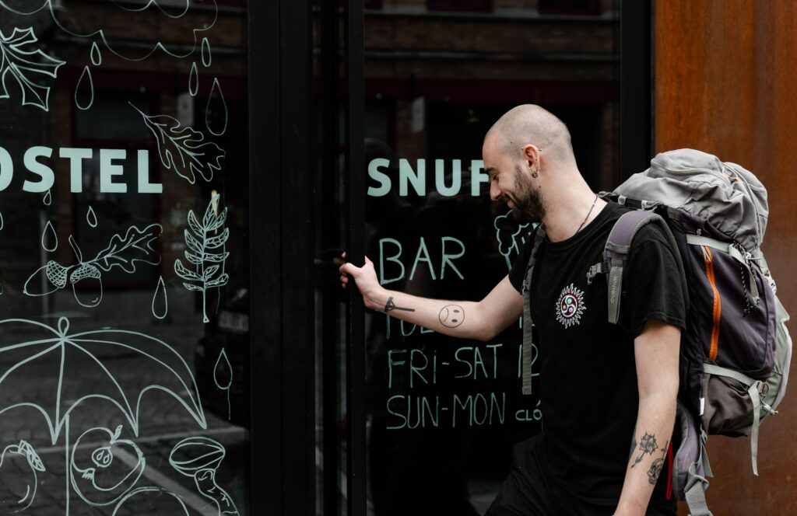

Waar Snuffel het verschil maakt bij het boeken van een hotel? Dat is goedkoop overnachten,
inclusief een persoonlijke aanpak. Tijdens een groepsreis heb je heel wat zaken te regelen
en zit je wellicht met veel vragen. Om alles vlot te laten verlopen, stellen we een medewerker
verantwoordelijk voor jouw groep. Dit is jouw aanspreekpunt tijdens je groepsovernachting.
Waar zit Brugge's beste cateraar, hoe zit dat weer met die toeristenbelasting, …
Wij denken met je mee en overlopen samen de beste opties voor de groep.

Vakantie, weekend of een doordeweekse dag en je weet niet wat te doen in Brugge?
Pimp je avond met een vleugje muziek, theater of moppentapperij. Van hartverwarmende
concerten tot machtige spektakels in onze Snuffel Hall (grote zaal),
aan events is er geen gebrek. Snuffel snel eens rond!

Ruime kamers, veel lichtinval en comfort. Dat zijn de drie belangrijkste peilers die wij
hanteren voor een aangename overnachting bij Snuffel. Brugge en haar onvoorwaardelijke trekpleisters
krijg je er van ons gratis bij, want Snuffel Hotel ligt middenin het centrum van de stad. Dé ideale
uitvalsbasis om Brugge te verkennen als groep of backpacker. Fun fact: in elke kamer hangen er
fotokaders van optredens die hebben plaatsgevonden in de Snuffel. Herken jij alle artiesten?
Met een zorgvuldig geselecteerd assortiment aan belgiesche gerechten staat Snuffel op de lijst van meest authentieke
en gezellige restaurants waar ook inwoners van Brugge hun dorst/honger komen lessen. In het restaurant vind je een sfeervolle
mix tussen locals en internationale gezelschappen, waar jong en oud het opnemen tegen elkaar tijdens een
partijtje kickeren en vooral: waar je jezelf helemaal thuis voelt.
Top of the bill: democratische prijzen én geweldig eten zijn ons handelsmerk.